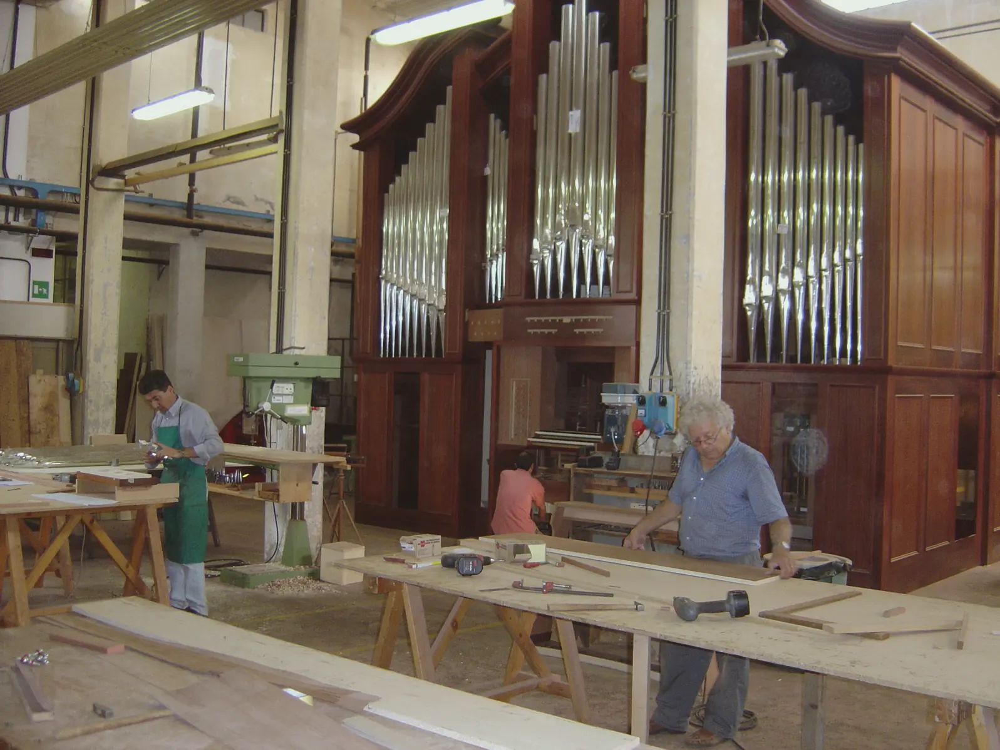
Fratelli RuffattiPadova, dal 1940Via Facciolati 166
Organi a canne
Li costruiamo e li restauriamo a Padova, per chiese, cattedrali e sale da concerto.
Builders and restorers of pipe organs, Padua, Italy.
Prima di partire, ogni organo si monta qui.L'organo della Cattedrale di Aguascalientes, Messico (due tastiere, 2005), montato nella nostra falegnameria di Padova. Ogni strumento Ruffatti, anche di grande dimensione, viene premontato in fabbrica.Every Ruffatti organ, regardless of size, is assembled in our factory prior to packing and shipping.
In un mondo in cui l'organaro può acquistare da catalogo parti d'organo e semplicemente assemblarle, costruiamo ogni componente possibile in laboratorio, dai somieri alle canne ad anima e ad ancia, fino ai particolari più minuti.«We at Fratelli Ruffatti manufacture every component possible in our workshop, from the windchests to the flue and reed pipes, down to the smallest details.»
Tutte le canne sono costruite in casa
Ben pochi organari al giorno d'oggi costruiscono le loro canne, preferendo comperarle da fornitori di parti d'organo. Noi partiamo dal tronco e dal lingotto.
Come costruiamo i nostri organi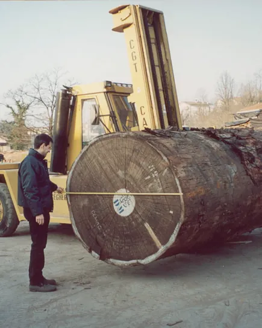
Il legname
La scelta di un tronco di mogano subito dopo l'arrivo via nave dall'Africa. Usiamo mogano sipo certificato FSC, stagionato naturalmente nel nostro laboratorio per cinque anni.
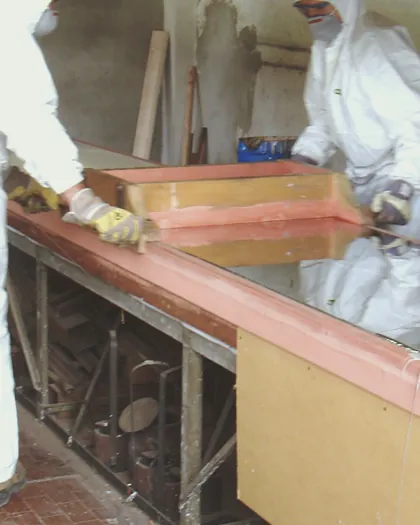
La lastra
Stagno e piombo fusi in un crogiolo e colati sul banco di fusione, che ha il ripiano di marmo molto spesso, ricoperto da un tessuto speciale.
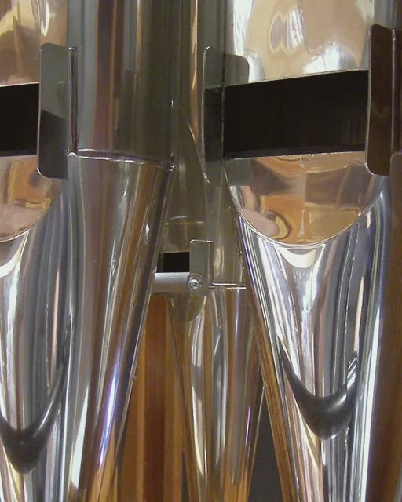
Le canne ad anima
Anche le canne di 8 piedi collocate all'interno dell'organo, mai visibili, sono di lega al 95% di stagno, e tutte, grandi e piccole, sono lucidate a mano.
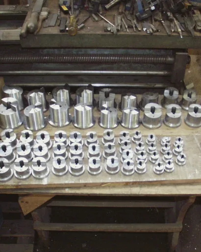
Le canne ad ancia
Il metallo per le noci viene fuso a mano con metodi antichi; poi ogni noce viene tornita da sola e adattata al proprio piede. Costruire canne ad ancia è diventata attività rara per gli organari.
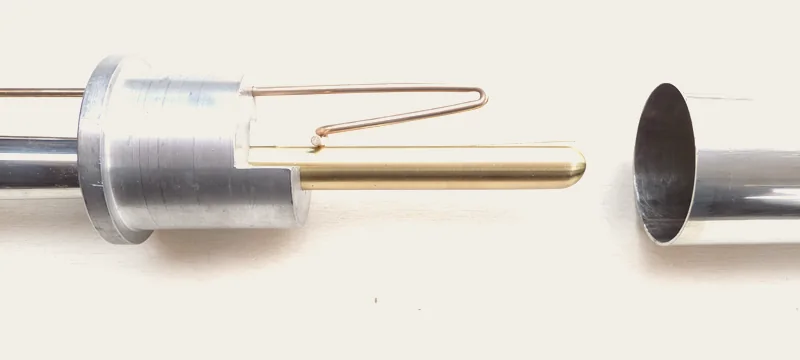
Trompette en chamade
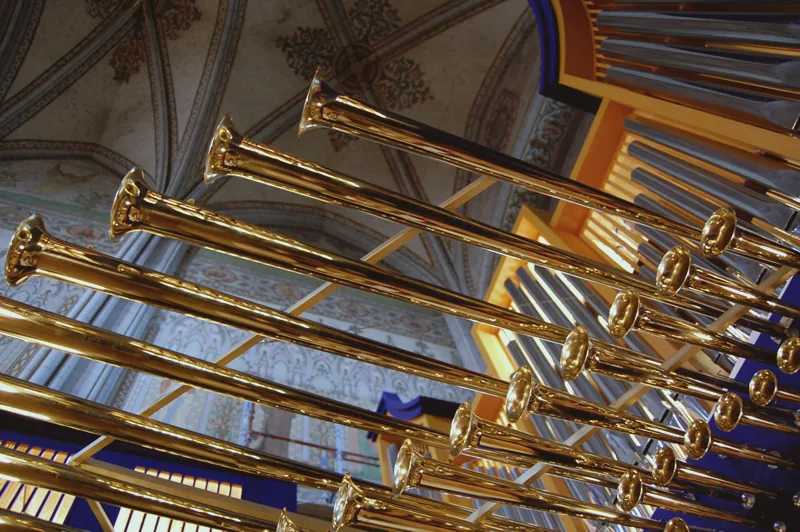
«The signature stop of Fratelli Ruffatti is the beautiful Trompette en Chamade.»
Le trombe orizzontali, o «en chamade», le facciamo con i risuonatori in lastra di ottone, di foggia e lavorazione molto simile alle trombe dell'orchestra. Il padiglione viene formato al tornio e poi saldato con argento, per una saldatura solida e invisibile.
A Uppsala, nel 2009: Trompette en Chamade 8′, 61 canne, sulla quarta tastiera. La disposizione fonica (PDF)
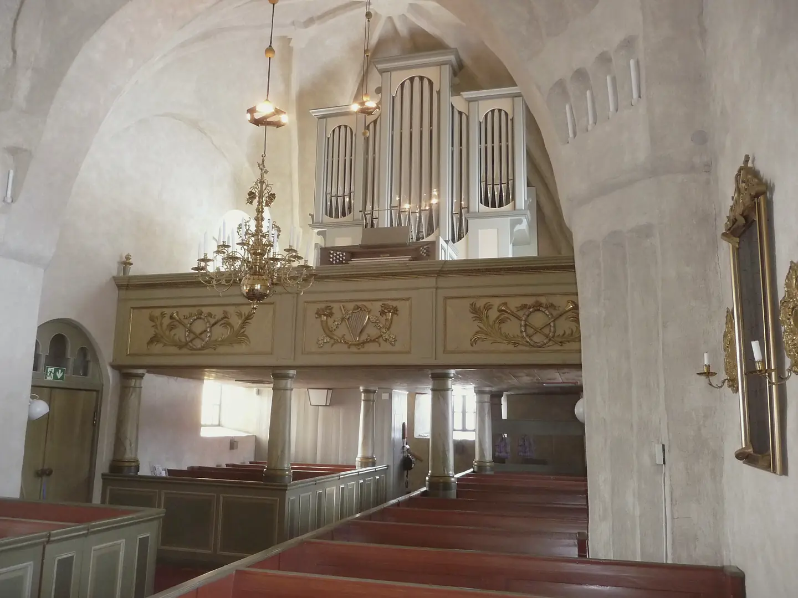
Chiesa parrocchiale di Boteå, Svezia. Una chiesa del dodicesimo secolo nella diocesi di Härnösand; l'organo ha due tastiere e trasmissione meccanica.
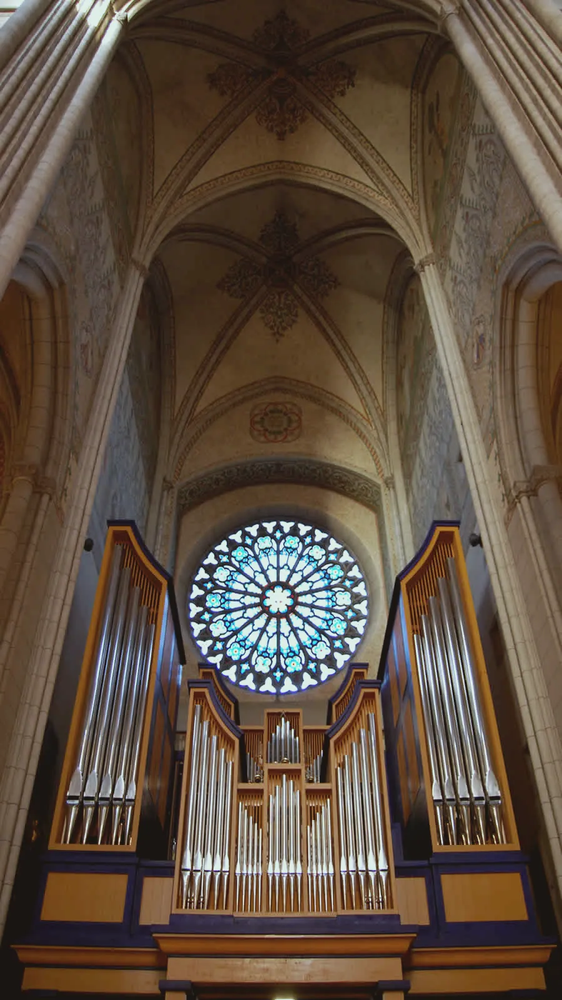
Da Padova abbiamo raggiunto tutti i continenti
Chiese, cattedrali, università e sale da concerto. Nel ventunesimo secolo abbiamo aggiunto il Messico, l'Australia, la Svezia, l'Irlanda e la Cina ai Paesi che ospitano i nostri strumenti.
- Basilica di Santa Maria la NovaMonreale, Palermosei tastiere
- Davies Symphony HallSan Francisco, Californiacinque tastiere, 1984
- Christ Cathedral, già Crystal CathedralGarden Grove, Californiacinque tastiere
- Cattedrale di UppsalaSveziaquattro tastiere, 2009
- Harbin Concert HallHarbin, Cinatre tastiere, 2015
- St. Mel's CathedralLongford, Irlandatre tastiere, 2015
- Santa Caterina da SienaWayne, Pennsylvaniatre tastiere, 37 registri, 2022
- Notre Dame SeminaryNew Orleans, Louisiana; in copertina su The Diapason, ottobre 2022due tastiere, 2022
«…suono dozzine di strumenti ogni anno in molte parti del mondo, e posso dirvi che questo grande strumento non è ancora stato superato!»
Le 86 opere significative, da una a sei tastiereDicono di noiCD incisi su organi Ruffatti
Restauro filologico di organi antichi
Restauriamo organi antichi in Italia e all'estero, anche di altri costruttori, per ridare piena funzionalità e restituire autenticità sonora a questi strumenti. Cinque di loro, dal 1579 al 1904:
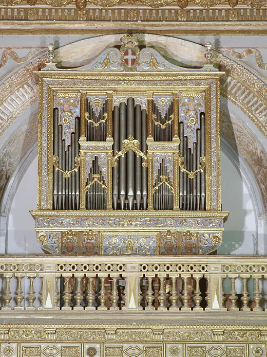
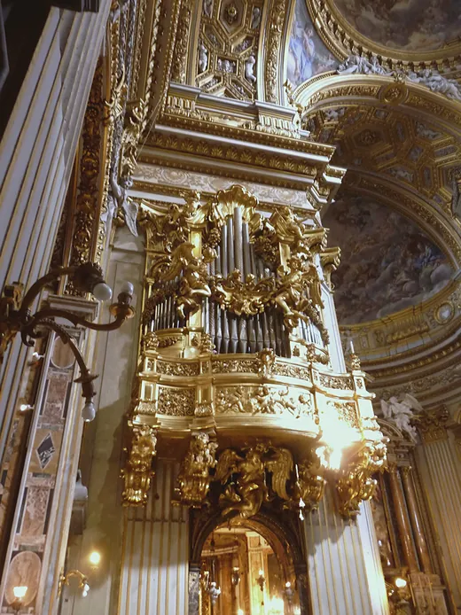
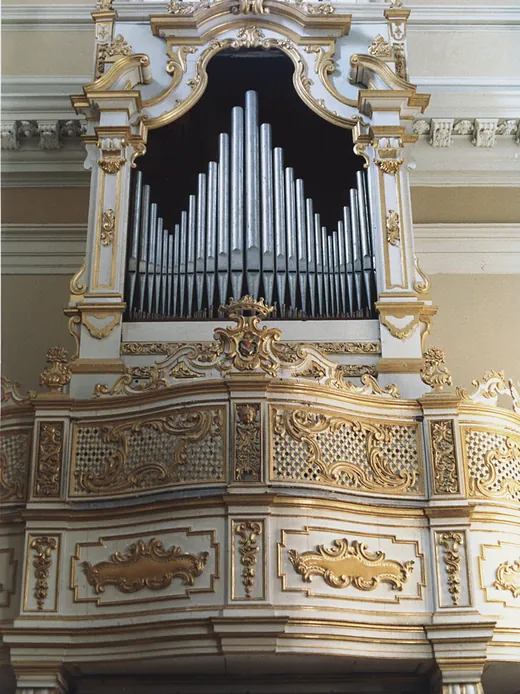
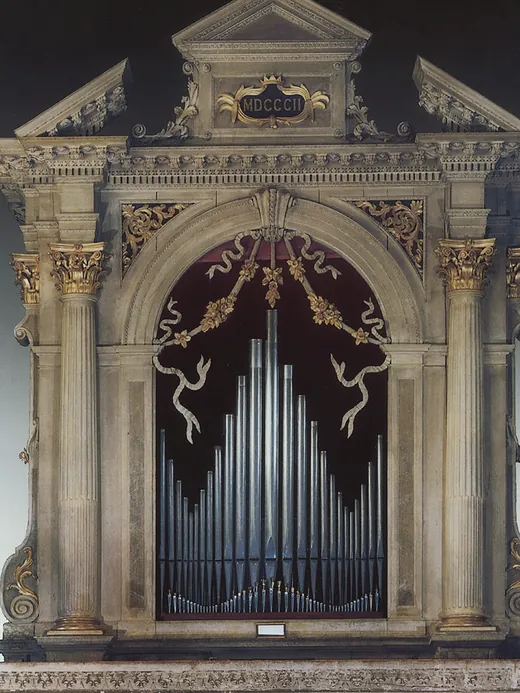
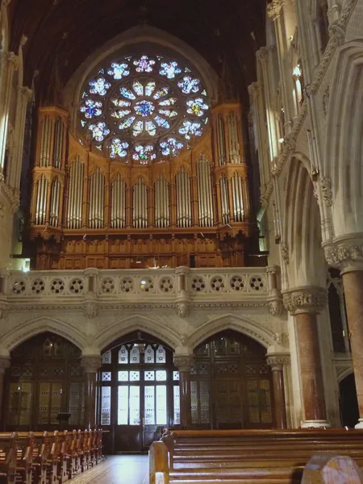
Organo muto, sporco o da revisionare?
Per la prima telefonata tenete a portata di mano:
- il nome della chiesa e il comune;
- il costruttore e l'anno dell'organo, se li conoscete;
- una foto della consolle e della targhetta;
- che cosa non funziona.
Concorso internazionale d'organo di Miami
Lo sponsorizziamo con la Church of the Epiphany di Miami, per organisti sotto i 30 anni. La finale dell'undicesima edizione è il 5 febbraio 2027 sull'organo Ruffatti della chiesa; premi di US$ 5.000, 2.500 e 1.500.
Il bando 2027, PDF in ingleseLa pagina del concorsoInstagram
Contatti
Chiamate o scriveteci, anche in inglese.
Via Facciolati 166, 35127 PadovaApre la mappa
Un organo nuovo: che cosa mandarci
- l'istituzione e il vostro ruolo;
- il luogo: chiesa o sala, città e Paese;
- l'organo di oggi, se c'è: costruttore, anno, tastiere e registri;
- la pianta o qualche foto della chiesa e della cantoria.
Writing from abroad
Tell us your institution, the church or hall and the present organ, and attach a few photos. Phone +39 049 750 666.
Write to us in English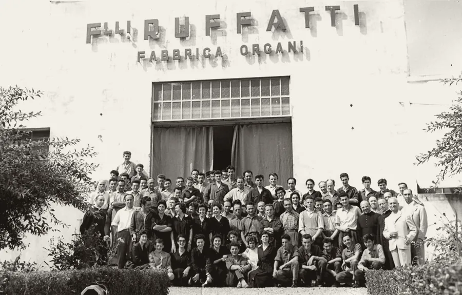